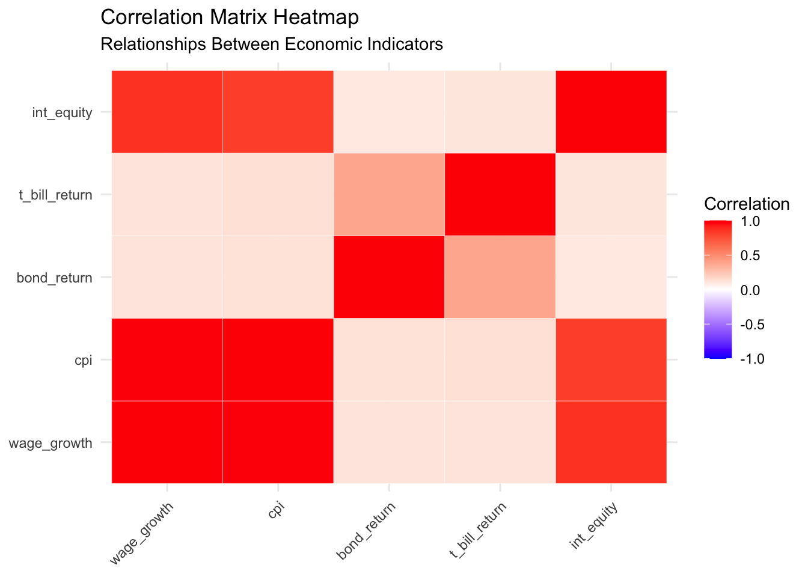

Mini-Project #04: Monte Carlo Informed Selection of CUNY Retirement Plans
Abstract
This project evaluates two retirement plans offered to CUNY faculty: the Teachers Retirement System (TRS) and the Optional Retirement Plan (ORP). Through the use of historical financial data, bootstrap inference techniques, and actuarial assumptions, the analysis estimates the probability that one plan outperforms the other, under various scenarios. Key considerations include salary growth, market performance, inflation, and individual risk tolerance. The findings aim to support faculty in making an informed and data-driven decision when choosing between the two retirement plans.
Background
CUNY offers tow distinct retirement plans for its employees. The first is the Teachers Retirement System (TRS). This plan is a “defined-benefit” plan pension plan, due to the fixed retirement payments guaranteed by the employer, based on the employee’s final average salary and years of service. Once retired, the retiree receives annual cost of living adjustments, based on inflation, capped at 3%. The contribution rates for TRS vary by salary tier.
The second retirement plan option is called the Optional Retirement Plan (ORP). This plan most closely resembles a 401(k) retirement plan, in that is a defined-contribution plan. Employee and employer contributions are invested in mutual funds with age-based asset allocations. Retirement income depends on both market performance and withdrawal strategies. This plan offers the potential for higher returns through compounded growth, but market volatility becomes a risk.
The analysis below evaluates these plans in detail, incorporating data from AlphaVantage and FRED to simulate market returns and inflation trends, and uses computational models to project outcomes over an employee’s career.
Code
library(dplyr)
Attaching package: 'dplyr'
The following objects are masked from 'package:stats':
filter, lag
The following objects are masked from 'package:base':
intersect, setdiff, setequal, union
The following object is masked from 'package:tidyr':
smiths
Task 1: Register for AlphaVantage API Key
First, we access AlphaVantage, a commercial stock market data provider. This step involves creating an AlphaVantage free API key. Ir is important to keep this key secure, so the key itself was saved separately in alphavantage_key.txt.
Code
#reading API key in api_key_file <-"alphavantage_key.txt"alpha_api_key <-readLines(api_key_file)
Next, we downloaded the package and loaded library httr2, which is a tool for making HTTP requests in R, which was designed to simplify interactions with APIs.
Code
library(httr2)
Task 2: Register for FRED API Key
We then access our next data source, FRED: the Federal Reserve Economic Data repository. The FRED api key is accessed in the same fashion as AlphaVantage, the key itself was saved separately in fred_key.txt.
Code
#reading FRED key in fred_key_file <-"fred_key.txt"fred_api_key <-readLines(fred_key_file)
Task 3: Data Acquisition
Before beginning the Monte Carlo analysis, we identify and download historical data series for each of the following:
Wage growth - this metric is necessary as wage growth determines how an individual’s income evolves over time. We first attempted to access the Average Hourly Earnings of State and Local Government Employees (series ID: CES9091000003), given CUNY employees are New York State employees, but it was no longer available in the FRED repository.
Instead, we accessed the Average Hourly Earnings of Production and Nonsupervisory Employees: Total Private (series ID: CES050000003). This gives us an alternative to understand wage growth patterns over time, within the private sector, given we were unable to find a puclic sector match. The httr2 packages allows us to send the request to the the API and parse the JSON response directly into R. We use a 20 year time period, starting 1/1/2003 and ending 12/31/2003.
Code
#FRED API base URLfred_base_url <-"https://api.stlouisfed.org/fred/series/observations"#FRED API parameters for wage growth datafred_params <-list(series_id ="CES0500000003", #average Hourly Earnings (Private Sector)api_key = fred_api_key, file_type ="json", # Response formatobservation_start ="2003-01-01", # Start dateobservation_end ="2023-12-31"# End date)#fetch dataresp <-request(fred_base_url) |>req_url_query(!!!fred_params) |>req_perform()#parse the JSON response into a data framewage_growth_data <-resp_body_json(resp)wage_growth_df <- wage_growth_data$observations |>as.data.frame() |>transform(date =as.Date(date), value =as.numeric(value))# Display the first few rows of the data frameprint(head(wage_growth_df))
After completing this step and viewing the dataframe in the R environment, it appeared as a list. The below code converts the wage_growth_df to a proper dataframe.
Code
#extract and convert the observations into a data framewage_growth_df <-do.call(rbind, lapply(wage_growth_data$observations, as.data.frame)) |>as.data.frame() |>transform(date =as.Date(date), # Convert 'date' column to Date formatvalue =as.numeric(value) # Convert 'value' column to numeric )#drop unnecessary columnswage_growth_df <- wage_growth_df[, c("date", "value")]#view the structure of the resulting data framestr(wage_growth_df)
'data.frame': 214 obs. of 2 variables:
$ date : Date, format: "2006-03-01" "2006-04-01" ...
$ value: num 20.1 20.1 20.1 20.2 20.3 ...
Code
#display the first few rowshead(wage_growth_df)
date value
1 2006-03-01 20.05
2 2006-04-01 20.15
3 2006-05-01 20.13
4 2006-06-01 20.23
5 2006-07-01 20.29
6 2006-08-01 20.32
Inflation - we access the CPI for All Urban Consumers: All Items (series ID:CPIAUCSL) from FRED, which measures the monthly changes in the price of goods and services purchased by urban customers. The resulting dataframe includes monthly observations of the CPI, formatted into a clean data frame for later analysis.
Code
#FRED API base URLfred_base_url <-"https://api.stlouisfed.org/fred/series/observations"#FRED API parameters for CPI datafred_params <-list(series_id ="CPIAUCSL", # CPI for All Urban Consumers: All Itemsapi_key = fred_api_key, # Your API keyfile_type ="json", # Response formatobservation_start ="2003-01-01", # Start dateobservation_end ="2023-12-31"# End date)#fetch CPI dataresp <-request(fred_base_url) |>req_url_query(!!!fred_params) |>req_perform()#parse the JSON response into a data framecpi_data <-resp_body_json(resp)cpi_df <-do.call(rbind, lapply(cpi_data$observations, as.data.frame)) |>as.data.frame() |>transform(date =as.Date(date), # Convert 'date' column to Date formatvalue =as.numeric(value) # Convert 'value' column to numeric )#drop unnecessary columns cpi_df <- cpi_df[, c("date", "value")]#view the structure of the resulting data framestr(cpi_df)
'data.frame': 252 obs. of 2 variables:
$ date : Date, format: "2003-01-01" "2003-02-01" ...
$ value: num 183 184 184 183 183 ...
Code
#display the first few rows of the data framehead(cpi_df)
date value
1 2003-01-01 182.6
2 2003-02-01 183.6
3 2003-03-01 183.9
4 2003-04-01 183.2
5 2003-05-01 182.9
6 2003-06-01 183.1
US Equity Market total returns - this metric reflects the overall performance of the US stock market, which includes:
Capital Gains: Price appreciation of stocks or an index
Dividends: Payments made to shareholders, reinvested for total returns
We access AlphaVantage’s TIME_SERIES_DAILY_ADJUSTED function which gives us access to the daily stock prices (open, close, high, low), adjusted close prices (adjusted for dividends and stock splits, representing total returns) , and volume.
We use the following code to access S&P 500 Total Returns (SPY) -
Code
#base URL for AlphaVantage APIalpha_base_url <-"https://www.alphavantage.co/query"#API parameters for SPYtest_params <-list(`function`="TIME_SERIES_DAILY_ADJUSTED", symbol ="SPY", apikey = alpha_api_key )#test requestresp <-request(alpha_base_url) |>req_url_query(!!!test_params) |>req_perform()print(resp_body_string(resp))
[1] "{\n \"Information\": \"Thank you for using Alpha Vantage! This is a premium endpoint. You may subscribe to any of the premium plans at https://www.alphavantage.co/premium/ to instantly unlock all premium endpoints\"\n}"
Given the output above, we ran into a premium endpoint, meaning the TIME_SERIES_DAILY_ADJUSTED function is not available using the free version of AlphaVantage. It is important to note this step involved a bit of trial and error.
We instead access the TIME_SERIES_DAILY data, which gives the unadjusted daily prices. This is not ideal, but will suffice for approximate analysis.
Code
#define the base URL for AlphaVantage APIalpha_base_url <-"https://www.alphavantage.co/query"#minimal API parameters for SPYtest_params <-list(`function`="TIME_SERIES_DAILY", # Function to fetch daily pricessymbol ="SPY", # S&P 500 ETFapikey = alpha_api_key # Your AlphaVantage API key)#send the test requestresp <-request(alpha_base_url) |>req_url_query(!!!test_params) |>req_perform()#parse the JSON responsespy_data <-resp_body_json(resp)#extract the daily time series dataspy_daily <- spy_data[["Time Series (Daily)"]]#convert to a data framespy_df <-do.call(rbind, lapply(names(spy_daily), function(date) {data.frame(date =as.Date(date),close =as.numeric(spy_daily[[date]][["4. close"]]) )}))#sort by datespy_df <- spy_df[order(spy_df$date), ]#view the resulting data framestr(spy_df)
'data.frame': 100 obs. of 2 variables:
$ date : Date, format: "2024-07-16" "2024-07-17" ...
$ close: num 565 557 553 549 555 ...
Code
head(spy_df)
date close
100 2024-07-16 564.86
99 2024-07-17 556.94
98 2024-07-18 552.66
97 2024-07-19 548.99
96 2024-07-22 554.65
95 2024-07-23 553.78
We also access the S&P 500 Index time seriesfrom FRED, which provides daily index values from 2003 to 2023.
Code
# Define the base URL for the FRED APIfred_base_url <-"https://api.stlouisfed.org/fred/series/observations"# Define API parameters for US equity market (S&P 500 Index as an alternative to Wilshire 5000)fred_params_us <-list(series_id ="SP500", # S&P 500 Index series IDapi_key = fred_api_key, # Your FRED API keyfile_type ="json", # Response formatobservation_start ="2003-01-01", # Start dateobservation_end ="2023-12-31"# End date)# Fetch the data from FRED APIresp <-request(fred_base_url) |>req_url_query(!!!fred_params_us) |>req_perform()# Parse the JSON responseus_equity_data <-resp_body_json(resp)# Convert the observations list into a clean dataframeus_equity_df <-do.call(rbind, lapply(us_equity_data$observations, function(x) {data.frame(date =as.Date(x$date), # Convert 'date' to Date formatus_equity =as.numeric(ifelse(x$value ==".", NA, x$value)), # Handle "." as NAstringsAsFactors =FALSE# Avoid unnecessary factor conversion )}))# Drop rows with NA values if necessaryus_equity_df <- us_equity_df[!is.na(us_equity_df$us_equity), ]# Verify the structure and content of the dataframestr(us_equity_df)
'data.frame': 2287 obs. of 2 variables:
$ date : Date, format: "2014-11-28" "2014-12-01" ...
$ us_equity: num 2068 2053 2067 2074 2072 ...
International Equity Market total returns - this metric provides insight into the benefits of global diversification. Investing outside of the US allows for exposure into different economies and sectors, which reduces dependency on the domestic market. One popular index for markets outside of North America is the MSCI EAFE, which is tracked by the EFA (MSCI EAFE) ETF.
By analyzing international equity market returns, we can model how investments in global stocks could impact long-term retirement outcomes, especially when paired with US data.
We run the following code to access International Equity Data using AlphaVantage.
Code
# Define the base URL for AlphaVantage APIalpha_base_url <-"https://www.alphavantage.co/query"# Minimal API parameters for EFA (MSCI EAFE ETF)efa_params <-list(`function`="TIME_SERIES_DAILY", # Function to fetch daily pricessymbol ="EFA", # MSCI EAFE ETFapikey = alpha_api_key # Your AlphaVantage API key)# Send the requestresp <-request(alpha_base_url) |>req_url_query(!!!efa_params) |>req_perform()# Parse the JSON responseefa_data <-resp_body_json(resp)# Extract the daily time series dataefa_daily <- efa_data[["Time Series (Daily)"]]# Convert to a data frameefa_df <-do.call(rbind, lapply(names(efa_daily), function(date) {data.frame(date =as.Date(date),close =as.numeric(efa_daily[[date]][["4. close"]]) )}))# Sort by dateefa_df <- efa_df[order(efa_df$date), ]# View the resulting data framestr(efa_df)
'data.frame': 100 obs. of 2 variables:
$ date : Date, format: "2024-07-16" "2024-07-17" ...
$ close: num 81.2 80.8 80 79.5 80.4 ...
Code
head(efa_df)
date close
100 2024-07-16 81.25
99 2024-07-17 80.82
98 2024-07-18 80.02
97 2024-07-19 79.53
96 2024-07-22 80.37
95 2024-07-23 79.92
The code above proceeds to use the TIME_SERIES_DAILY endpoint to grab daily prices for the EFA ETF, parameters are specified and the request is sent to the AlphaVantage API, the Time Series (Daily) section of the JSON response is extracted, a data frame is created with the date and closing price columns, sorted by date.
Note: One limitation of using AlphaVantage’s free content is we cannot go back 15-20 years in every sector, as we might hope, as find easier when using FRED.
US equity data typically calculates logarithmic returns. To transform this data so it may be compared against US equity returns, or incorporated into Monte Carlo simulations, we calculate the logarithmic returns as follows:
date close return
100 2024-07-16 81.25 NA
99 2024-07-17 80.82 -0.005306362
98 2024-07-18 80.02 -0.009947856
97 2024-07-19 79.53 -0.006142294
96 2024-07-22 80.37 0.010506663
95 2024-07-23 79.92 -0.005614838
We can also use FRED to access the ICE BofA Emerging Markets Corporate Plus Index Total Return Index Value. This index measures the total returns of emerging market corporate bonds. We use this dataset as a proxy for international equity market performance because it captures returns in emerging markets, which, similar to equity investments, have hgiher risk and growth potential.
Code
# Define FRED API base URLfred_base_url <-"https://api.stlouisfed.org/fred/series/observations"# FRED API parameters for the selected international equity indexfred_params_int <-list(series_id ="BAMLEMCBPITRIV", # International Equity Market Indexapi_key = fred_api_key, # Your FRED API keyfile_type ="json", # Response formatobservation_start ="2003-01-01", # Start dateobservation_end ="2023-12-31"# End date)# Fetch international equity market dataresp <-request(fred_base_url) |>req_url_query(!!!fred_params_int) |>req_perform()# Parse the JSON response into a data frameint_equity_data <-resp_body_json(resp)int_equity_df <-do.call(rbind, lapply(int_equity_data$observations, as.data.frame)) |>as.data.frame() |>transform(date =as.Date(date), # Convert 'date' column to Date formatvalue =as.numeric(value) # Convert 'value' column to numeric )
Warning in eval(substitute(list(...)), `_data`, parent.frame()): NAs introduced
by coercion
Code
# Drop unnecessary columns and renameint_equity_df <- int_equity_df[, c("date", "value")] |>rename(int_equity = value) # Rename 'value' column to 'int_equity'# View the structure of the resulting data framestr(int_equity_df)
'data.frame': 5548 obs. of 2 variables:
$ date : Date, format: "2003-01-01" "2003-01-02" ...
$ int_equity: num NA 144 144 145 145 ...
Code
# Display the first few rows of the data framehead(int_equity_df)
date int_equity
1 2003-01-01 NA
2 2003-01-02 144.36
3 2003-01-03 144.43
4 2003-01-06 144.53
5 2003-01-07 145.01
6 2003-01-08 145.50
int_equity_monthly <- int_equity_df |>mutate(month =format(date, "%Y-%m")) |>group_by(month) |>summarize(int_equity =mean(int_equity, na.rm =TRUE)) |>ungroup() |>mutate(date =as.Date(paste0(month, "-01"), format ="%Y-%m-%d")) |>select(-month) #dropping month - realized later on we did not need it so modifying this step#checking the structure of the modified datasetstr(int_equity_monthly)
Bond market total returns - this financial metric provides insight into fixed-income investments. These are typically less volatile compared to equities, and serve as a method to stabilize a portfolio. Bonds offer a predictable income stream and can hedge against stock market downturns. Bonds serve as a safe and stable portion of a portfolio as one plans for retirement.
We access FRED’s 10-Year Treasury Constant Maturity Rate, for 2003-2023.
Code
# Define the base URL for FRED APIfred_base_url <-"https://api.stlouisfed.org/fred/series/observations"# FRED API parameters for 10-Year Treasury Ratefred_params <-list(series_id ="GS10", # 10-Year Treasury Constant Maturity Rateapi_key = fred_api_key, # Your FRED API keyfile_type ="json", # Response formatobservation_start ="2003-01-01", # Start dateobservation_end ="2023-12-31"# End date)# Send the requestresp <-request(fred_base_url) |>req_url_query(!!!fred_params) |>req_perform()# Parse the JSON responsebond_data <-resp_body_json(resp)# Extract and convert the observations into a data framebond_df <-do.call(rbind, lapply(bond_data$observations, as.data.frame)) |>as.data.frame() |>transform(date =as.Date(date), # Convert 'date' column to Date formatvalue =as.numeric(value) # Convert 'value' column to numeric )# Drop unnecessary columnsbond_df <- bond_df[, c("date", "value")]# View the structure of the resulting data framestr(bond_df)
'data.frame': 252 obs. of 2 variables:
$ date : Date, format: "2003-01-01" "2003-02-01" ...
$ value: num 4.05 3.9 3.81 3.96 3.57 3.33 3.98 4.45 4.27 4.29 ...
Code
# Display the first few rowshead(bond_df)
date value
1 2003-01-01 4.05
2 2003-02-01 3.90
3 2003-03-01 3.81
4 2003-04-01 3.96
5 2003-05-01 3.57
6 2003-06-01 3.33
With the hope to later analyze returns, we can calculate monthly percentage changes.
Code
bond_df <- bond_df |>transform(return =c(NA, diff(log(value))))# View the first few rows with returnshead(bond_df)
date value return
1 2003-01-01 4.05 NA
2 2003-02-01 3.90 -0.03774033
3 2003-03-01 3.81 -0.02334736
4 2003-04-01 3.96 0.03861484
5 2003-05-01 3.57 -0.10367843
6 2003-06-01 3.33 -0.06959329
Short-term debt returns - reflect the interest earned on safe, short-term fixed-income securities. One commonly used financial instrument here is the Treasury Bill. When planning for retirement, short-term debt can serve as a buffer for market volatility.
Below we access FRED’s 3-Month Treasury Bill Rate, with a resulting data frame, t_bill_df, which contains short-term debt rate data from 2003-2023.
Code
# Define the base URL for FRED APIfred_base_url <-"https://api.stlouisfed.org/fred/series/observations"# FRED API parameters for 3-Month Treasury Bill Ratefred_params <-list(series_id ="TB3MS", # 3-Month Treasury Bill Rateapi_key = fred_api_key, # Your FRED API keyfile_type ="json", # Response formatobservation_start ="2003-01-01", # Start dateobservation_end ="2023-12-31"# End date)# Send the requestresp <-request(fred_base_url) |>req_url_query(!!!fred_params) |>req_perform()# Parse the JSON responset_bill_data <-resp_body_json(resp)# Extract and convert the observations into a data framet_bill_df <-do.call(rbind, lapply(t_bill_data$observations, as.data.frame)) |>as.data.frame() |>transform(date =as.Date(date), # Convert 'date' column to Date formatvalue =as.numeric(value) # Convert 'value' column to numeric )# Drop unnecessary columnst_bill_df <- t_bill_df[, c("date", "value")]# View the structure of the resulting data framestr(t_bill_df)
'data.frame': 252 obs. of 2 variables:
$ date : Date, format: "2003-01-01" "2003-02-01" ...
$ value: num 1.17 1.17 1.13 1.13 1.07 0.92 0.9 0.95 0.94 0.92 ...
Code
# Display the first few rowshead(t_bill_df)
date value
1 2003-01-01 1.17
2 2003-02-01 1.17
3 2003-03-01 1.13
4 2003-04-01 1.13
5 2003-05-01 1.07
6 2003-06-01 0.92
We once again include the monthly logarithmic return rates to our data frame:
Code
t_bill_df <- t_bill_df |>transform(return =c(NA, diff(log(value))))#view the first few rows with returnshead(t_bill_df)
date value return
1 2003-01-01 1.17 NA
2 2003-02-01 1.17 0.00000000
3 2003-03-01 1.13 -0.03478612
4 2003-04-01 1.13 0.00000000
5 2003-05-01 1.07 -0.05455898
6 2003-06-01 0.92 -0.15104026
Before moving on to the next task, we filter all (applicable) data sets to reflect the time frame of 2007-2023, keeping in mind our wage growth data was only able to go back to mid-2006. This adjustment aligns our data for further analysis.
Code
#defining the date rangestart_date <-as.Date("2007-01-01")end_date <-as.Date("2023-12-31")#adjusting wage growth dataframewage_growth_df <-subset(wage_growth_df, date >= start_date & date <= end_date)#adjusting CPI dataframecpi_df <-subset(cpi_df, date >= start_date & date <= end_date)#adjusting bond dataframebond_df <-subset(bond_df, date >= start_date & date <= end_date)#adjusting T-bill dataframet_bill_df <-subset(t_bill_df, date >= start_date & date <= end_date)#adjusting international equity dataframeint_equity_monthly <-subset( int_equity_monthly, date >= start_date & date <= end_date)#verify each dataframelist(wage_growth =range(wage_growth_df$date),cpi =range(cpi_df$date),bond =range(bond_df$date),t_bill =range(t_bill_df$date),int_equity =range(int_equity_monthly$date))
This step involves conducting exploratory data analysis to identify key properties of the data historical data acquired.
The code below calculates the long-run monthly averages and variances for each data series.
The table above summarizes the key statistical properties, the long-run monthly averages, and the variability of each series over the 2007-2023 time period.
The wage growth shows a mean value of 25.89 and variance of 13.74. This indicates a relatively stable upward trend over time.
The CPI exhibits the highest variance at 697.58, indicates there were significant fluctuations in inflation from 2007 to 2023. This impacts our retirement planning, emphasizing the importance of considering inflation-indexed returns (like in our two retirement plan options).
Next, we generate the correlation matrix table through the code below. We first combine our data into a single data frame, aligned_data.
Code
# Renaming and preparing datasets for alignmentwage_growth_prepared <- wage_growth_df |>rename(wage_growth = value)cpi_prepared <- cpi_df |>rename(cpi = value)bond_prepared <- bond_df |>rename(bond_return = return) |>select(date, bond_return)t_bill_prepared <- t_bill_df |>rename(t_bill_return = return) |>select(date, t_bill_return)# Ensure int_equity_monthly has the correct structureint_equity_prepared <- int_equity_monthly print(head(int_equity_monthly))
# Combine all datasets by date using a full joinaligned_data <-list( wage_growth_prepared, cpi_prepared, bond_prepared, t_bill_prepared, int_equity_prepared) |>reduce(full_join, by ="date")# Check structure and previewstr(aligned_data)
'data.frame': 204 obs. of 6 variables:
$ date : Date, format: "2007-01-01" "2007-02-01" ...
$ wage_growth : num 20.6 20.7 20.7 20.8 20.8 ...
$ cpi : num 203 204 205 206 207 ...
$ bond_return : num 0.04293 -0.00844 -0.03449 0.02811 0.01271 ...
$ t_bill_return: num 0.02645 0.00999 -0.01805 -0.01427 -0.02917 ...
$ int_equity : num 204 206 207 208 209 ...
# Recompute summary statistics for aligned datamean_stats <- aligned_data |>summarize(`Wage Growth`=mean(wage_growth, na.rm =TRUE),`CPI`=mean(cpi, na.rm =TRUE),`Bond Returns`=mean(bond_return, na.rm =TRUE),`T-Bill Returns`=mean(t_bill_return, na.rm =TRUE),`International Equity`=mean(int_equity, na.rm =TRUE) ) |>pivot_longer(cols =everything(),names_to ="Data Metric",values_to ="Mean Value" )variance_stats <- aligned_data |>summarize(`Wage Growth`=var(wage_growth, na.rm =TRUE),`CPI`=var(cpi, na.rm =TRUE),`Bond Returns`=var(bond_return, na.rm =TRUE),`T-Bill Returns`=var(t_bill_return, na.rm =TRUE),`International Equity`=var(int_equity, na.rm =TRUE) ) |>pivot_longer(cols =everything(),names_to ="Data Metric",values_to ="Variance" )# Combine means and variancessummary_stats_aligned <- mean_stats |>left_join(variance_stats, by ="Data Metric")# Display the summary statistics using the gt packagelibrary(gt)summary_stats_aligned |>gt() |>tab_header(title ="Updated Summary Statistics for Aligned Data",subtitle ="Averages and Variances from 2007 to 2023" ) |>fmt_number(columns =vars(`Mean Value`, Variance),decimals =2 )
Warning: Since gt v0.3.0, `columns = vars(...)` has been deprecated.
• Please use `columns = c(...)` instead.
Updated Summary Statistics for Aligned Data
Averages and Variances from 2007 to 2023
Data Metric
Mean Value
Variance
Wage Growth
25.89
13.74
CPI
243.26
697.58
Bond Returns
0.00
0.01
T-Bill Returns
0.00
0.16
International Equity
337.20
6,754.06
Next, to analyze the relationships between the various economic indicators in our dataset, we compute a correlation matrix and visualize it using a heatmap. The correlation matrix tells us the strength and direction of linear relationship between each variable pair.
Code
#compute correlation matrixcor_matrix <-cor(aligned_data[, -1], use ="complete.obs")#reshape correlation matrix into long format for ggplotcor_long <-melt(cor_matrix)# creating heatmap ggplot(cor_long, aes(x = Var1, y = Var2, fill = value)) +geom_tile(color ="white") +# Add gridlines for better separationscale_fill_gradient2(low ="blue", high ="red", mid ="white",midpoint =0, limit =c(-1, 1), space ="Lab",name ="Correlation" ) +theme_minimal() +theme(axis.text.x =element_text(angle =45, hjust =1),axis.title.x =element_blank(),axis.title.y =element_blank() ) +ggtitle("Correlation Matrix Heatmap",subtitle ="Relationships Between Economic Indicators" )

The heatmap visualizes the correlations among the economic indicators. We see a strong positive correlation between wage growth and CIP, indicating that as wages increase, consumer prices tend to rise, which aligns with inflationary trends. Differently, we find a weak positive correlation between T-bill returns and other indicators like bond returns and international equities. This highlights the more stable and less market-sensitive nature of these economic indicators.